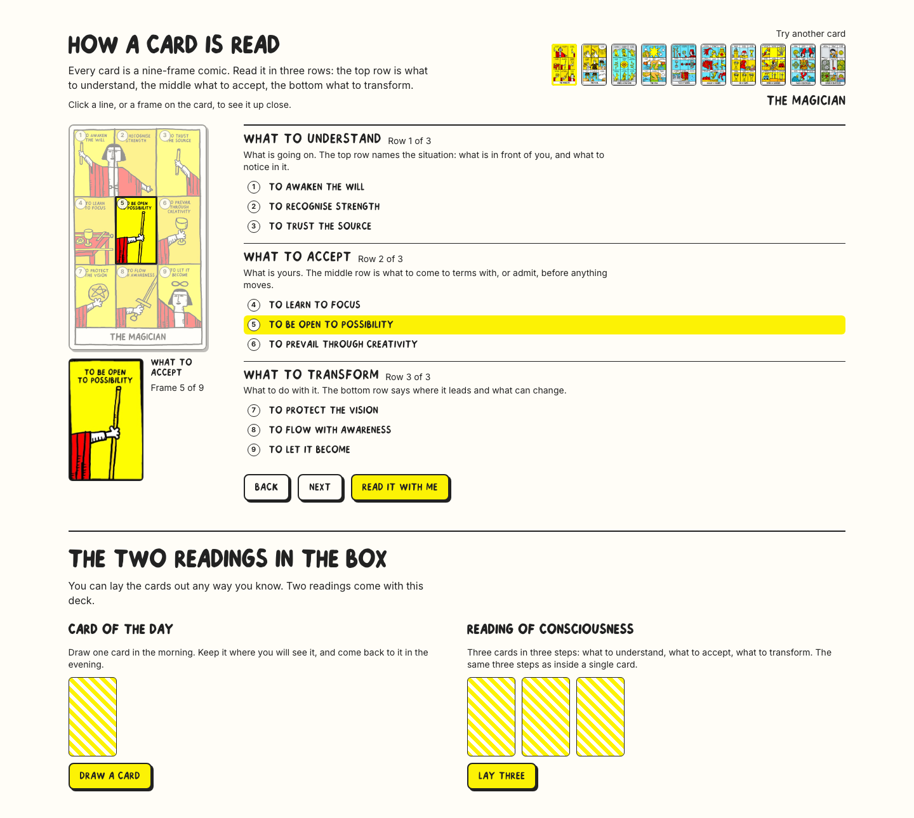
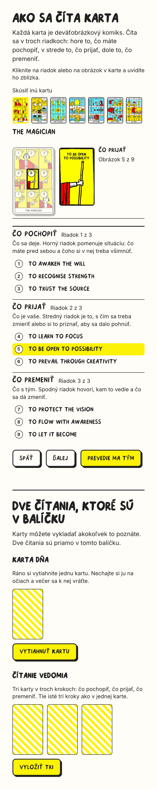
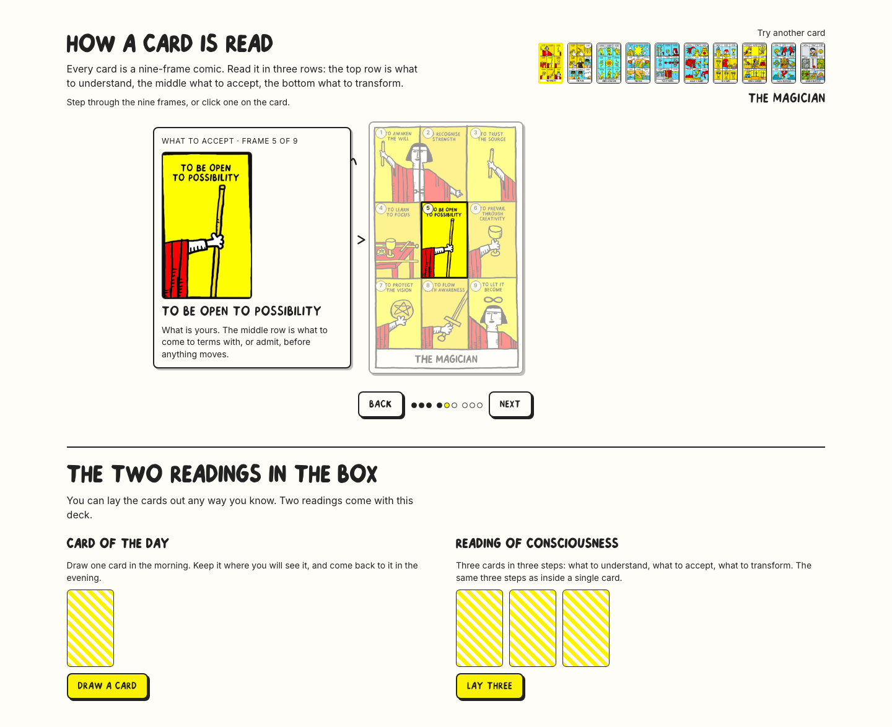
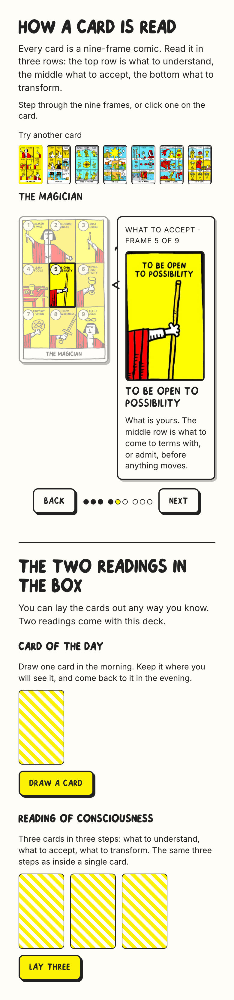
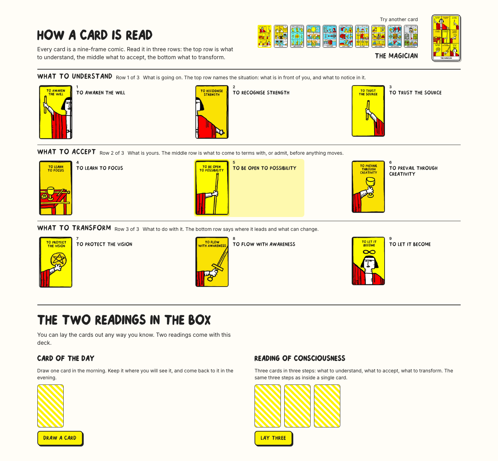
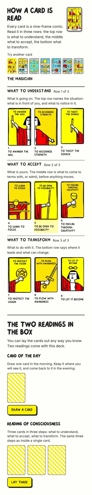

Three directions, mocked up with the real artwork and the measured nine-frame grid. Every frame you see enlarged is cropped from the card image itself — no new files. The two readings sit below their own rule in all three. Open a mock-up and click the frames; arrow keys step, Esc stops the walk.
The text leads. Three row blocks, nine lines, the card small beside them with the active frame ringed and enlarged underneath. Read it with me walks the three rows — seven seconds each — with a Stop button.


The card sits whole and small in the middle of the paper. The chosen frame is enlarged in a note in the margin, with an ink arrow drawn from the note to the frame. Notes alternate left and right, as if someone annotated a print. Back / Next, nine dots in three groups.


The nine frames are lifted out of the card and laid out as they sit on it: three labelled rows, each frame enlarged with its caption beside it. The whole card stays in the corner as a map. Nothing has to be clicked for the section to be understood.


| Slot | Slovensky | English |
|---|---|---|
| Heading | Ako sa číta karta | How a card is read |
| Intro | Každá karta je deväťobrázkový komiks. Číta sa v troch riadkoch: hore to, čo máte pochopiť, v strede to, čo prijať, dole to, čo premeniť. | Every card is a nine-frame comic. Read it in three rows: the top row is what to understand, the middle what to accept, the bottom what to transform. |
| Row 1 | Čo pochopiť. Čo sa deje. Horný riadok pomenuje situáciu: čo máte pred sebou a čoho si v nej treba všimnúť. | What to understand. What is going on. The top row names the situation: what is in front of you, and what to notice in it. |
| Row 2 | Čo prijať. Čo je vaše. Stredný riadok je to, s čím sa treba zmieriť alebo si to priznať, aby sa dalo pohnúť. | What to accept. What is yours. The middle row is what to come to terms with, or admit, before anything moves. |
| Row 3 | Čo premeniť. Čo s tým. Spodný riadok hovorí, kam to vedie a čo sa dá zmeniť. | What to transform. What to do with it. The bottom row says where it leads and what can change. |
| Hint (1) | Kliknite na riadok alebo na obrázok v karte a uvidíte ho zblízka. | Click a line, or a frame on the card, to see it up close. |
| Hint (2) | Prechádzajte deviatimi obrázkami alebo kliknite na niektorý v karte. | Step through the nine frames, or click one on the card. |
| Picker | Skúsiť inú kartu | Try another card |
| Controls | Späť · Ďalej · Prevedie ma tým · Zastaviť · Riadok 1 z 3 · Obrázok 5 z 9 | Back · Next · Read it with me · Stop · Row 1 of 3 · Frame 5 of 9 |
| Readings heading | Dve čítania, ktoré sú v balíčku | The two readings in the box |
| Readings intro | Karty môžete vykladať akokoľvek to poznáte. Dve čítania sú priamo v tomto balíčku. | You can lay the cards out any way you know. Two readings come with this deck. |
| Reading 1 | Karta dňa. Ráno si vytiahnite jednu kartu. Nechajte si ju na očiach a večer sa k nej vráťte. | Card of the day. Draw one card in the morning. Keep it where you will see it, and come back to it in the evening. |
| Reading 2 | Čítanie vedomia. Tri karty v troch krokoch: čo pochopiť, čo prijať, čo premeniť. Tie isté tri kroky ako v jednej karte. | Reading of consciousness. Three cards in three steps: what to understand, what to accept, what to transform. The same three steps as inside a single card. |
| Buttons | Vytiahnuť kartu · Vyložiť tri · Vytiahnuť znova | Draw a card · Lay three · Draw again |
| 1 · rail | 2 · annotated print | 3 · storyboard | |
|---|---|---|---|
| 1440 × 900 — two readings start at | 836px | 721px | 880px |
| 390 × 844 — card + explanation end at | 542px | 797px | 665px |
| Layout shift while stepping frames | 0.000 | 0.000 | 0.000 |
| Nothing past the content edge · no horizontal scroll | pass | pass | pass |
| Palette (ink / paper / yellow only) | pass | pass | pass |
| Keyboard: arrows step, Enter opens, Esc stops | pass | pass | pass |
| Reduced motion: ring and arrow appear instantly | pass | pass | pass |
| Chromium + WebKit, EN + SK, no console errors | pass | pass | pass |
Card names show on hover and on focus in the picker, and the current card's name is always set below it. The nine captions are the ones printed inside the artwork, transcribed — in both languages, because they are part of the picture. If we want Slovak meanings under them, that is new copy from Walter.